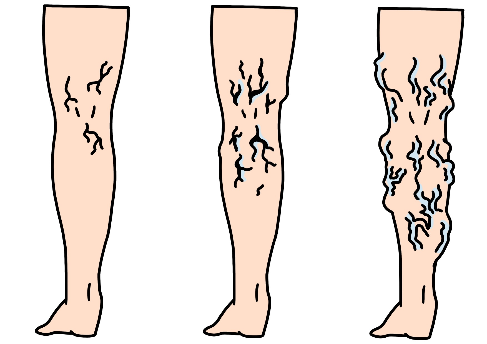

下肢静脈瘤とは
下肢静脈瘤は、
足の静脈（血管）が拡張し、
ボコボコと浮き出てしまう
血管の病気です。
「足がだるい」
「むくむ」
「つりやすい」
「血管が浮き出る」
などの症状がみられ、
日常生活に影響を及ぼすことがあります。
命に関わることは多くありませんが、
自然に治ることは少なく、
進行すると皮膚の変色や潰瘍の原因となる場合があります。

このような症状はありませんか
下肢静脈瘤の原因
下肢静脈瘤は、
静脈の逆流を防ぐ
「静脈弁」が正常に働かなくなることで、
血液が逆流し、
足に溜まることで発症します。
遺伝的要因のほか、
立ち仕事、
加齢、
妊娠・出産などが
原因となることがあります。
女性に比較的多くみられる病気です。
当院での検査
当院では、
超音波検査（エコー検査）を行い、
血液の逆流や血管の状態を詳しく確認します。
痛みの少ない検査で、
短時間で実施可能です。
検査結果をもとに、
患者様それぞれに適した
治療方法をご提案いたします。
治療方法
圧迫療法（保存的治療）
弾性ストッキングを着用し、
脚を適度に圧迫することで
血液循環を改善する治療法です。
静脈瘤の進行予防や、
足のだるさ・むくみなどの
症状軽減が期待できます。
血管内レーザー治療
細いレーザーファイバーを
静脈内に挿入し、
血管の内側を閉塞させる
日帰り治療です。
健康保険適応となる場合があり、
身体への負担が少なく、
根治性の高い治療法です。
血管内塞栓術
医療用接着剤を用いて
静脈を閉塞する治療法です。
レーザー治療と比較して、
熱による周囲組織への影響や
痛みが少ない特徴があります。
血管の状態や体質により、
適した治療法をご提案いたします。
静脈瘤切除術
小さな傷から特殊器具を用いて
静脈瘤を取り除く治療法です。
傷跡が目立ちにくく、
痛みも比較的少ないため、
より効果的な治療が期待できます。
硬化療法
硬化剤を静脈内へ注入し、
血管を閉塞させる治療法です。
短時間で行える治療ですが、
病状によっては
他の治療法をご提案する場合があります。
日帰り手術の流れ
問診・診察
現在の症状や、足のお悩みについて詳しくお伺いいたします。
超音波検査
超音波（エコー）検査を行い、血液の逆流や血管の状態を詳しく確認します。
治療方針のご説明
検査結果をもとに、患者様それぞれに適した治療方法をご提案いたします。
日帰り手術
レーザー治療など、患者様に適した治療を行います。
多くの場合、日帰りでの治療が可能です。
術後・ご帰宅
術後は院内でしばらく安静にしていただきます。
多くの方が当日から日常生活へ復帰可能です。
経過観察
術後数日〜1週間程度で再度ご来院いただき、経過確認を行います。
費用について
下肢静脈瘤治療は、
健康保険適応となります。
治療内容により
費用が異なりますので、
詳しくは診察時にご説明いたします。
ご相談ください
「足がむくむ」
「血管が浮き出ている」
「足が重だるい」
などのお悩みがございましたら、
お気軽にご相談ください。
患者様それぞれの状態に合わせ、
適切な治療をご提案いたします。
お気軽にお電話ください
TEL: 072-873-2700